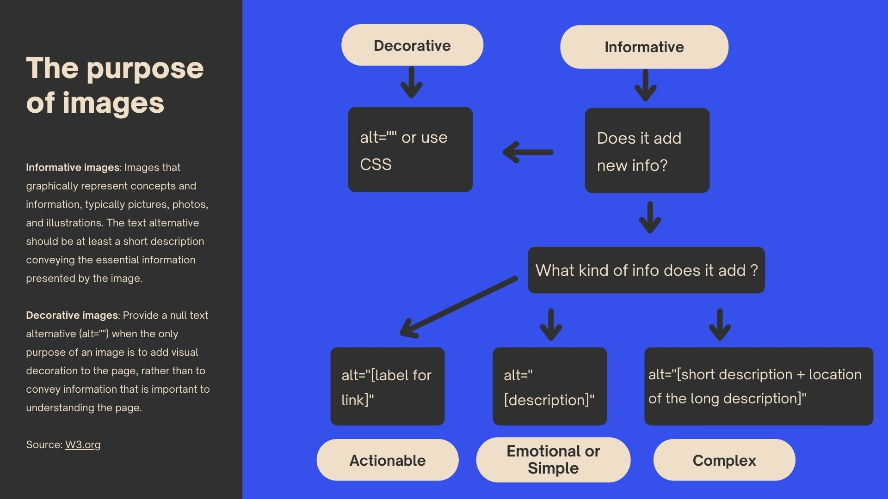

Designing accessible images

Long Description
The purpose of images
Informative images: Images that graphically represent concepts and information, typically pictures, photos and illustrations. The text alternative should be at least a short description conveying the essential information presented by the image.
Decorative images: Provide a null text alternative (alt="") when the only purpose of an image is to add visual decoration to the page, rather than to convey information that it is important to understanding the page.
- If it is for decorative purposes, we use alt="" or CSS.
- If it is for informative purposes, but does it add new info?
- If not, it is for decorative purposes. We use alt="" or CSS.
- If yes, what kind of info does it add?
- If it is for actionable purposes, we use alt="[label for the link]".
- If it is for emotional or simple purposes, we use alt="[description]".
- If it is for complex purposes, we use alt="[short description + location of the long description]".
For more information, please visit W3.org